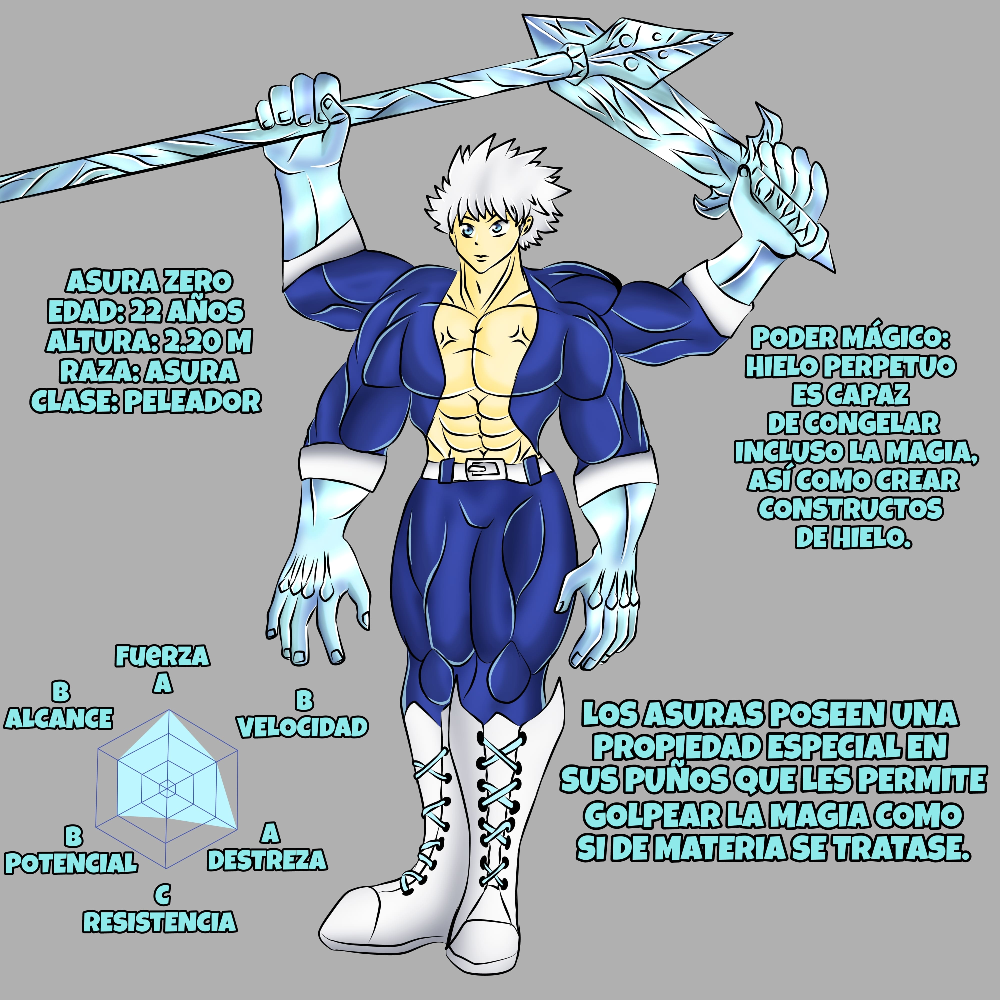
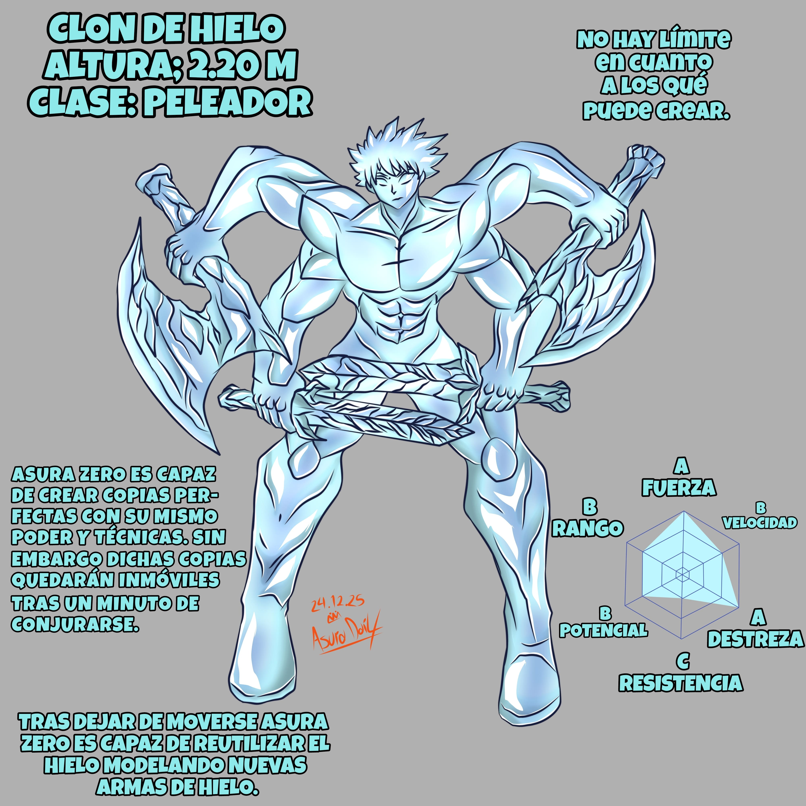
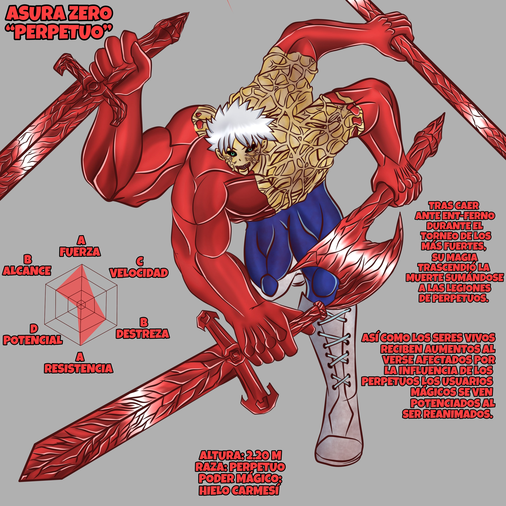

Asura Zero. Frío guerrero que ni la muerte detuvo.
Junto a su hermano gemelo Asura Destello, se abrió paso en las
clasificatorias del torneo de los más fuertes, por cien años se
mantuvieron constantemente en criogenización hasta el repentino
regreso del temido “Demonio de Zancart” quien participará en dicho
torneo. Junto a su hermano eliminaría de la competición a sus
congéneres Asuras. En su búsqueda de venganza contra quien arruinó la
vida de su madre quien moriría con su nacimiento. En la primera ronda
se enfrentaría a Ent-Ferno de la raza de los “Brotemas” enfrentamiento
que no terminaría bien para el guerrero de cuatro brazos. Quién sería
superado ante la adaptación de su oponente.
Sin embargo su muerte no sería el final de su historia pues pronto la
ciudad de los guerreros se vería afectada por la influencia de los
“Perpetuos” reanimando a aquellos caídos entre ellos Asura Zero quien
propagaria más muerte con sus helados poderes.
Alcanzando su apogeo tras trascender la muerte. Sería confrontado por el resto de
participantes quienes se verían envueltos en la guerra más grande del mundo en
contra de la asociación CAOS.